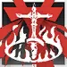
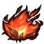
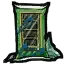
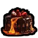

史尔特尔
史尔特尔 是一位擅长近战与输出的角色，同时有一定的抗伤能力，拥有晋升系统。
①基础属性
- 饥饿125/理智125/血量125
- 攻击系数1.0
②人物特性
1.【炎契恒守】
- 【史尔特尔】的武器不会脱手。
- 【史尔特尔】不会被催眠（仍会打哈欠）。
- 【史尔特尔】装备的【史尔特尔服装】死亡后不掉落。
- 【史尔特尔】免疫【诅咒饰品】的诅咒效果，但依然会自动吸附到身上，并且可以携带大于10个。
- 【史尔特尔】出生自带【莱万汀】【史尔特尔服装】。
2.【炎契恒守】
*精一后获得
- 无羁热流：【史尔特尔】免疫减速/冻结/精神控制，经过蜘蛛网不会引出蜘蛛
- 熔火之光：【史尔特尔】发出半径约25码的光照
- 美食品尝：【史尔特尔】食用【冰淇淋】回复20生命上限，食用【豪华冰淇淋】回复200生命上限，食用降温料理和【发光浆果慕斯】额外回复15点理智值
- 迅捷身影：【史尔特尔】移速提升25%，若装备【莱万汀】再获得移速加成25%
3.【焰舞无拘】
*精二后获得
- 精准火焰：【史尔特尔】可以制作并使用大厨厨具，烹饪大厨料理
- 无阻剑舞：【史尔特尔】移除碰撞体积，位移技能每命中一个目标回复1理智值
- 不灭余烬：【史尔特尔】免疫击飞，免疫受伤硬直，免疫滑倒，免疫钢羊鼻涕
- 美食品尝：【史尔特尔】食用【豪华冰淇淋】额外获得3天的无仇恨和免疫睡眠效果（时长可叠加）
E.【部分说明】
- 【史尔特尔】对【泥岩】造成的伤害-30%。
③等级系统
1. 结论，精一属性：
- 饥饿150/理智150/血量150
2. 结论，精二属性：
- 饥饿200/理智200/血量200
④天赋系统
1.余烬
- 自身持有生命值下限1，损失血量超过承受能力时不死并以一定生命值上限抵扣，默认每次抵扣5点生命值上限。余烬拥有触发速率限制，默认每秒只能扣除10次上限。精一时抵扣所需为两倍。
- 生命上限低于30%时死亡，复活时生命上限不会低于50%。（若服务器未开启生命上限惩罚，则改为获得50%常态减伤）
- 自身使用【强心针】回复的生命上限降低至固定20。
2.灼热的回忆
- 自身持有温度下限10°，免疫过冷过热伤害。
- 当体温t＞50°时，根据自身温度获得加成：
获得(t-50)^2*0.0025基础攻击加成
每秒扣除(t-50)^2*0.000375+0.4san
每秒损失(t-50)^2*0.000625+0.2温度
在90°时达到最大：+4.0基础攻击倍率，每秒扣除1san，每秒损失1温度 - 80~90°时，每秒回1血，若生命上限未满，则每2秒额外损失1°并回复1生命上限。
3.绝烬重燃
- 给予【莱万汀】1个【重生护符】，使【莱万汀】获得作祟复活功能。
- 如果作祟者为【史尔特尔】，则清除上限惩罚并永久+20额外血量上限，最高+100，该额外效果每240s（游戏内半天）仅一次。
⑤技能系统
1.技能基础说明
| 所属角色 | 技能图标与名称 | 解锁方式 | 技能类型 | 持续时间 | 冷却需求 |
|---|---|---|---|---|---|
| 史尔特尔 | 烈焰魔剑 |
初始解锁 | 自动触发 | 瞬发 | 两次攻击 |
熔核巨影 |
达到精英等级1 | 主动触发 （按键J） |
20秒 | 20秒/6秒（复活后） | |
|  黄昏 |
达到精英等级2 | 主动触发 （按键K） |
无限 | 60秒/5秒（复活后） |
2.技能效果
| 所属角色 | 技能图标与名称 | 效果描述 |
|---|---|---|
| 史尔特尔 | 烈焰魔剑 |
装备莱万汀才能恢复技力和触发，下次攻击提升至300%倍率，并提高自身体温4°。 |
熔核巨影 |
装备莱万汀才能触发，攻击倍率提升至150%，攻击范围提升至2+2（2+3伤害范围），同时攻击2个目标。 | |
黄昏 |
攻击倍率提升至300%，攻击范围提升至2+4（2+5伤害范围），同时攻击4个目标，自身每秒损失血量（5+当前持续时间），且受到攻击+2°。 技能在结束后240秒重置掉血速度。在这之前重新开启都会继承掉血速度。 非3技能期间食用豪华冰淇淋立即重置掉血速度。 |
E.【部分说明】
- 未装备【莱万汀】的情况下使用【熔核巨影】，会立即装备【莱万汀】和【史尔特尔服装】。
⑥物品设计/制作
1.专属材料
| 物品图标与名称 | 物品类型 | 解锁方式 | 制作材料 | 效果简述 |
|---|---|---|---|---|
|  纯粹火焰 |
物品/材料 | 科学机器 | ①龙鳞*2 ②火荨麻叶*2 ③辣椒*2 ④灰烬*10 |
说明-获取方式： ①击杀史诗生物有概率掉落，默认50% |
2.专属功能性物品
| 物品图标与名称 | 物品类型 | 解锁方式 | 制作材料 | 效果简述 |
|---|---|---|---|---|
 豪华冰淇淋 |
物品/功能 | 科学机器 | ①金块*5 ②月亮碎片*5 ③冰激凌*3 ④蜂王浆*3 ⑤蓝宝石*1 |
属于好东西，保质期10天 +0饱食度，+150理智值，+150生命值 食用后降温40℃，持续8分钟 |
|  玻璃海苔 |
物品/功能 | 初始解锁 | ①干海带叶*2 ②月亮碎片*1 |
每次制作给予5个 属于好东西，保质期无限 +10饱食度，+10理智值，+2生命值 食用时20%概率受到10伤害（可被护甲防御抵消） |
4.专属武器
| 物品图标与名称 | 物品类型 | 解锁方式 | 制作材料 | 效果简述 |
|---|---|---|---|---|
莱万汀 |
装备/手部 | 无法解锁 | 无法制作 |
攻击力40，攻击距离1 无耐久，自带光源 可以砍树，拥有当前伤害（位面+普通）*3%的效率。 砍树时会将产物替换为烧熟的或者灰烬木炭等东西。 右键可以进行位移（精二解锁），无CD 右键已装备的莱万汀切换技能方案： ①关闭施法：右键不在瞬移 ②仅位移：右键仅瞬移，不造成伤害，消耗15点理智值/5点生命值。 ③位移且伤害：右键瞬移，位移并造成5码的150%范围伤害，消耗15点饥饿值+15点理智值/15点生命值。 （黄昏持续期间改为消耗血量，斩击范围+2） 说明-基础特性： ①可给予以下物品增强此装备的战斗向属性。 【红宝石】*1：1点【物理攻击力】（最多给予30个） 【红色孢子】*1：2点【物理攻击力】（最多给予5个） 【火荨麻叶】*1：1点【位面攻击力】（最多给予10个） 【纯粹火焰】*1：5点【物理攻击力】、1点【位面攻击力】（最多给予5个） 【暗影香炉】*1：5点【物理攻击力】、5点【位面攻击力】（最多给予1个） 【亮茄外壳】*1：2点【物理攻击力】、2点【位面攻击力】（最多给予10个） 说明-其余设定： ①其他人装备会-2血并脱手。 |
4.专属身体装备
| 物品图标与名称 | 物品类型 | 解锁方式 | 制作材料 | 效果简述 |
|---|---|---|---|---|
史尔特尔服装 |
装备/身体 | 无法解锁 | 无法制作 |
储物空间格数8 40%基础防御，无耐久 基础50%保鲜，60%防水，死亡不掉落 说明-基础特性： ①可给予以下物品增强此装备的生存向属性。 【熊皮】：5%【保鲜】（最高95%） 【巨鹿眼球】：540%【防水】、绝缘 【弹性空间制造器】：储物空间格数变为14格 ②可给予以下物品增强此装备的战斗向属性。 【红宝石】*1：1%【防御】（最多给予10个） 【鳞片】*1：3%【防御】（最多给予5个） 【岩浆虫卵】*1：10%【防御】、10点【位面防御】（最多给予1个） 【骨头盔甲】*1：5%【防御】、5点【位面防御】（最多给予1个） 【暗影碎布】*1：1%【防御】、1点【位面防御】（最多给予10个） 说明-其余设定： ①因为升级组件和背包冲突，部分材料请脱掉衣服再塞东西升级。 |
5.晋升物品
| 物品图标与名称 | 物品类型 | 解锁方式 | 制作材料 | 效果简述 |
|---|---|---|---|---|
 高级资深干员训练书 |
物品/功能 | 科学机器 | ①金块*20 ②木炭*20 ③红宝石*5 ④外壳碎片*3 |
*仅【史尔特尔】可制作与使用 *使用后令对应角色精英化阶段提升至1 |
 高级资深干员特训书 |
物品/功能 | 科学机器 | ①金块*40 ②绝望石*5/发芽的石果*10 ③纯粹火焰*5 ④橙宝石*5 |
*仅【史尔特尔】可制作与使用 *使用后令对应角色精英化阶段提升至2 |
6.专属料理
| 料理图标与名称 | 料理类型 | 烹饪时间 | 食材需求 | 料理效果 |
|---|---|---|---|---|
 灼热之息 |
好东西 | 20秒 | ①火荨麻叶 ②辣椒 ③冰 ④灰烬 |
保质期3天 +5饱食度，0理智值，+10生命值 体温锁定在90℃，持续1分钟 说明-其余设定： ①女武神不吃。 |
|  熔岩之吻 |
好东西 | 20秒 | ①火荨麻叶 ②辣椒 ③冰 ④纯粹火焰 |
保质期60天 +5饱食度，-50理智值，-25生命值 体温锁定在90℃，持续8分钟 说明-其余设定： ①无法喂食给他人。 |
7.其余特殊物品
| 物品图标与名称 | 物品类型 | 解锁方式 | 制作材料 | 效果简述 |
|---|---|---|---|---|
 恐怖奶奶 |
物品 | 远古一本 | ①地精奶奶*1 ②纯粹恐惧*4 | 音乐播放器（冰播放亘古，噩梦燃料播放andarsar，月岩播放维度逃逸，化石播放主宰，音量可调） |
8.新增专属原版配方
| 物品名称 | 解锁方式 | 制作材料 | 效果简述 |
|---|---|---|---|
| 木炭 | 初始解锁 | ①木头*1 | *一次性制作1个 |
| 木炭*10 | 科学机器 | ①木头*10 | *一次性制作10个 |
| 红宝石 | 初始解锁 | ①灰烬*5 ③木炭*5 | *一次性制作1个 |
| 红宝石*10 | 科学机器 | ①灰烬*50 ③木炭*50 | *一次性制作10个 |
| 外壳碎片 | 科学机器 | ①火龙果*2 | *一次性制作1个 |
| 鳞片 | 炼金引擎 | ①红宝石*5 ②外壳碎片*2 | *一次性制作1个 |
7.其余事项
1.模组配置
- 目前提供的可配置模组的内容包括：
【史尔特尔】的技能快捷键。
【史尔特尔】的技能倍率计算方式。
【史尔特尔】的【纯粹火焰】爆率。
【史尔特尔】的部分技能数值。
【史尔特尔】的初始精英化等级。
【史尔特尔】的语音音量大小。
2.模组兼容
- 暂无问题。